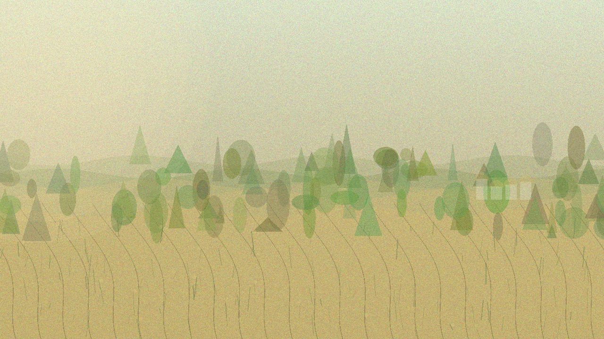

Главная / Владимирская область

Владимирская область
Что посадить
Что посадить
в Владимирской области
Разделение удобно вести по северным лесам, центральной клязьминской полосе и южному Ополью с более открытыми и тёплыми участками.
Более лесная и прохладная часть: надёжны картофель, капуста, зелень, корнеплоды и зимостойкие ягодники.
Открыть страницу зоны → Центральная клязьминская зонаСбалансированная зона для обычного огорода и сада: лучше выбирать солнечные места и не загущать посадки.
Открыть страницу зоны → Южное ОпольеБолее открытая и перспективная садовая зона: плодовые, тыквенные и томаты идут лучше при защите от ветра.
Открыть страницу зоны →